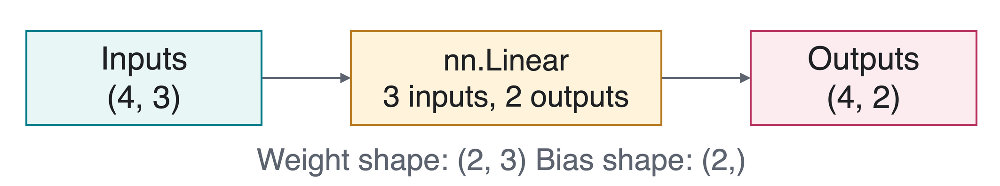
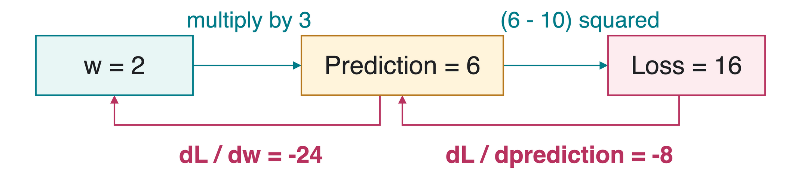

CS 463G & CS 663
Lecture 27: Practical PyTorch
Fall 2026
The Main PyTorch Components
PyTorch is a Python library for tensor computation and learning models from data.
torchCreate arrays and compute with them
torch.utils.dataRetrieve examples and group them into batches
torch.nnDefine layers, models, and loss functions
torch.autogradCompute derivatives automatically
torch.optimUpdate a model’s learned values
Read each call as an object, an operation, and a result . Start with small arrays whose values and shapes you can check.
The numerical arrays in this lecture are constructed examples for exploring PyTorch’s interface, not a real prediction dataset or reported experiment. A batch is a group of examples processed together. The cartoon is a conceptual software-toolbox illustration. Sources: https://docs.pytorch.org/tutorials/beginner/basics/intro.html and https://docs.pytorch.org/tutorials/beginner/basics/quickstart_tutorial.html.
Creating Tensors
A tensor is a multidimensional array. Its dimensions are axes . Shape gives their lengths, and dtype gives the number representation.
import torch= torch.tensor([[1. , 2. , 3. ], [4. , 5. , 6. ]],= torch.float32)print (x.shape) # torch.Size([2, 3]): 2 rows, 3 columns print (x.dtype) # torch.float32: 32-bit floating point
torch.zeros(2, 3)A 2-by-3 array filled with zeros
torch.ones(2, 3)A 2-by-3 array filled with ones
torch.arange(6)The integers 0, 1, 2, 3, 4, 5
torch.rand(2, 3)A 2-by-3 array of random values in [0,1)
An axis is one dimension. torch.tensor constructs a tensor from the nested Python lists and copies the data. float32 means 32-bit floating-point values. torch.arange(6) uses an integer dtype by default; zeros/ones/rand use the default floating dtype unless changed. rand samples a uniform distribution, not a normal distribution. The opening x remains the same 2-by-3 floating-point tensor for the following syntax examples. Sources: https://docs.pytorch.org/tutorials/beginner/basics/tensorqs_tutorial.html and https://docs.pytorch.org/docs/stable/generated/torch.tensor.html.
Indexing and the dim Argument
Indices start at 0 . In x[row, column], : selects every entry along that axis.
print (x[0 ]) # tensor([1., 2., 3.]) print (x[:, 1 ]) # tensor([2., 5.]) print (x[0 :1 ].shape) # torch.Size([1, 3]): keep a row axis print (x.mean(dim= 0 )) # tensor([2.5, 3.5, 4.5]) print (x.mean(dim= 1 )) # tensor([2., 5.]) mean(dim=0) averages down the rows. mean(dim=1) averages across each row. The averaged axis disappears by default.
For this matrix dim=0 is the row axis and dim=1 is the column axis. Reducing along dim=0 leaves one value per column. Indexing with an integer removes that axis; a slice such as 0:1 preserves it. keepdim=True can preserve a length-one axis during a reduction. These are actual values calculated from the x defined on the preceding slide. Sources: https://docs.pytorch.org/docs/stable/generated/torch.mean.html and https://docs.pytorch.org/tutorials/beginner/basics/tensorqs_tutorial.html.
Operators and Broadcasting
* multiplies matching entries. @ performs matrix multiplication. For this matrix, .T swaps rows and columns.
print (x * x) # [[1, 4, 9], [16, 25, 36]] print (x @ x.T) # [[14, 32], [32, 77]] = torch.tensor([10. , 20. , 30. ])print (x + offset) # [[11, 22, 33], [14, 25, 36]] Broadcasting reuses values across compatible axes. Here one 3-entry offset is added to each row of the 2-by-3 tensor.
Compare shapes from the right: matching lengths or a length of 1 are compatible. (2, 3) + (3,) works; (2, 3) + (2,) fails.
The comments abbreviate PyTorch’s printed tensor formatting, preserving the exact values. Matrix multiplication sums products across the shared dimension: (2,3)@(3,2) gives (2,2). Broadcasting conceptually extends compatible dimensions without needing to physically duplicate the offset. Missing leading axes act like length-one axes. .T is used only on a two-dimensional tensor here. Sources: https://docs.pytorch.org/docs/stable/notes/broadcasting.html, https://docs.pytorch.org/docs/stable/generated/torch.matmul.html, and https://docs.pytorch.org/docs/stable/generated/torch.mul.html.
Reshaping and Joining Tensors
reshape reorganizes the same number of values into a new shape.
print (x.reshape(3 , 2 ))# tensor([[1., 2.], # [3., 4.], # [5., 6.]])
x.flatten()(6,): join its axes into one
x.unsqueeze(0)(1, 2, 3): insert a length-one axis
torch.cat([x, x], dim=0)(4, 3): join along an existing axis
torch.stack([x, x], dim=0)(2, 2, 3): add an axis for the two tensors
Reshaping is not transposing. x.reshape(3, 2) and x.T have the same shape but different values at some positions.
reshape may return a view or a copy, so do not rely on its storage-sharing behavior. It preserves element order for this contiguous x; transposing changes axis order. cat joins existing axes and requires other axis lengths to match. stack requires matching input shapes and inserts a new axis. squeeze(0) would undo the specific unsqueeze(0) shown here. flatten(start_dim=1) is useful for keeping an existing batch axis while joining later axes. Sources: https://docs.pytorch.org/docs/stable/generated/torch.reshape.html, https://docs.pytorch.org/docs/stable/generated/torch.cat.html, and https://docs.pytorch.org/docs/stable/generated/torch.stack.html.
Devices and .to(...)
A device is where a tensor is stored and computed on. An accelerator is hardware such as a graphics processing unit (GPU ).
if torch.accelerator.is_available():= torch.accelerator.current_accelerator()else := torch.device("cpu" )= x.to(device)print (x_device.device)
The central processing unit (CPU ) is enough for these small examples.
.to(device) returns a tensor on that device. Keep its return value.Move a model with model.to(device) before creating its optimizer.
Use Colab or the official stable installer . Check the installed version with torch.__version__.
The modern torch.accelerator interface avoids assuming all students have the same accelerator. Older explicit CUDA/MPS availability checks remain valid. CUDA is NVIDIA’s Compute Unified Device Architecture; MPS is Apple’s Metal Performance Shaders backend. Tensor.to returns a tensor, which may be the same object if no conversion is necessary. Module.to moves its registered parameters/buffers and modifies the module in place; returning the module also allows chaining. A dtype can be changed with a call such as x.to(torch.float64). Source: https://docs.pytorch.org/docs/stable/generated/torch.Tensor.to.html and https://docs.pytorch.org/tutorials/beginner/basics/quickstart_tutorial.html.
Dataset and DataLoaderA Dataset supplies one indexed example. A DataLoader groups examples into a batch . These four made-up examples have three input features each and class labels 0 or 1.
from torch.utils.data import TensorDataset, DataLoader= torch.tensor([[1. , 0. , 0. ], [0. , 1. , 0. ],0. , 0. , 1. ], [1. , 1. , 1. ]])= torch.tensor([0 , 1 , 1 , 0 ], dtype= torch.int64)= TensorDataset(features, labels)= DataLoader(data, batch_size= 2 , shuffle= True )= next (iter (loader))print (xb.shape, yb.shape) # (2, 3), (2,)
TensorDataset matches rows with labels at the same index.iter(loader) creates an iterator; next(...) retrieves one batch.shuffle=True changes example order while keeping each label attached. int64 stores integer class indices.
Features are input numbers describing an example. Labels are the chosen output classes, represented as integer indices. These artificial arrays illustrate API syntax only, not a scientific dataset or learning-performance claim. len(data)=4 and data[0] returns the first feature row with label 0. A full batch contains two rows of three numbers and two int64 labels. int64 means 64-bit integers. num_workers=0 is the portable default. Source: https://docs.pytorch.org/docs/stable/data.html#torch.utils.data.TensorDataset and https://docs.pytorch.org/docs/stable/data.html#torch.utils.data.DataLoader.
A Layer: nn.Linear
A layer transforms inputs into outputs. nn.Linear(3, 2) learns a weighted sum plus an added constant (bias ) for each of two outputs.

from torch import nn= nn.Linear(3 , 2 ).to(device)print (layer(features.to(device)).shape) # (4, 2) print (layer.weight.shape) # (2, 3) print (layer.bias.shape) # (2,) The weights and biases are parameters : tensors whose values training can change. The leading batch length stays 4 .
Linear(in_features,out_features) applies y=x@weight.T+bias along the last input axis. The four-example input is the features tensor defined on the preceding slide. PyTorch stores the weight as (out_features,in_features), so this layer has six weights and two biases. Its output values depend on initialization; only the guaranteed shapes are shown. Source: https://docs.pytorch.org/docs/stable/generated/torch.nn.Linear.html.
A Model: Subclassing nn.Module
A module stores computation and parameters. A subclass inherits this behavior.
class TinyNet(nn.Module):def __init__ (self ):super ().__init__ ()self .linear = nn.Linear(3 , 2 )def forward(self , x):return self .linear(x)= TinyNet().to(device)
__init__, super()Initialize the parent module, then create layers
self.linearself is this model. PyTorch tracks attached layers’ parameters.
forwardDefine the calculation invoked by model(xb)
Call model(xb), rather than calling forward directly, so PyTorch’s surrounding module machinery runs. Initialize the parent before assigning child modules. model.parameters() recursively exposes registered trainable tensors to an optimizer. self is Python’s conventional name for the current instance; it is not a special PyTorch tensor. Source: https://docs.pytorch.org/docs/stable/generated/torch.nn.Module.html.
Layer Composition: nn.Sequential
nn.Sequential feeds each layer’s output into the next layer. It is itself an nn.Module.
An activation function transforms intermediate values. The rectified linear unit (ReLU) keeps positive values and replaces negative values with zero.
= nn.Sequential(3 , 4 ),4 , 2 ),print (stack(xb.to(device)).shape) # (2, 2) print (nn.ReLU()(torch.tensor([- 2. , 0. , 3. ])))# tensor([0., 0., 3.]) For our two-example batch, the shapes are (2,3)\to(2,4)\to(2,4)\to(2,2) .
The middle 4 is the number of values produced per example by the first layer, not the batch length. ReLU changes values without changing shape. This stack is an alternative model used to demonstrate composition; the later optimizer excerpt uses the simpler TinyNet named model, not this object named stack. ReLU has no learned parameters here. Sources: https://docs.pytorch.org/docs/stable/generated/torch.nn.Sequential.html and https://docs.pytorch.org/docs/stable/generated/torch.nn.ReLU.html.
Autograd and .backward()
Autograd computes derivatives automatically. A gradient measures how a loss changes with a parameter. requires_grad=True requests this tracking.
Scalar example: input a=3 , weight w=2 , target 10 , loss L=(wa-10)^2 .

= torch.tensor(2.0 , requires_grad= True )= (w * 3 - 10 ) ** 2 print (w.grad.item()) # gradient as a Python number: -24.0 \dfrac{dL}{dw}=2(wa-10)a=2(6-10)\cdot3=-24. .backward() does not update w .
The scalar input a=3 is mathematical notation; the Python matrix x is unchanged. backward uses the chain rule: dL/dprediction=-8 and dprediction/dw=3. w.grad stores the accumulated derivative; item() extracts the single Python numeric value. A new forward pass builds a new derivative graph for an ordinary training step. detach() returns a tensor outside this gradient history and shares storage; clone() copies values and is not the same operation. Source: https://docs.pytorch.org/tutorials/beginner/basics/autogradqs_tutorial.html and https://docs.pytorch.org/docs/stable/generated/torch.Tensor.detach.html.
Loss Functions and Their Inputs
A loss function measures prediction error. Its expected shapes and dtypes depend on the task.
Mean squared error (MSELoss)
Numeric predictions and targets with the same shape
Cross-entropy (CrossEntropyLoss)
Raw class scores (logits ) shaped (batch, classes) and integer class indices shaped (batch,)
= torch.tensor([1. , 3. ])= torch.tensor([2. , 2. ])print (nn.MSELoss()(pred, target).item()) # 1.0 = torch.tensor([[2. , 0. ], [0. , 2. ]])= torch.tensor([0 , 1 ], dtype= torch.int64)print (nn.CrossEntropyLoss()(scores, classes).item()) # about 0.127
For this classification loss, pass raw scores . Softmax converts scores to probabilities; the loss already handles that conversion internally.
These are separate small examples for two loss interfaces. MSELoss gives ((1-2)2+(3-2) 2)/2=1. The cross-entropy rows each assign score 2 to the correct class and 0 to the other, giving log(1+exp(-2))=0.126928… with default mean reduction. Class-index targets are int64, not float labels or argmax predictions. CrossEntropyLoss also supports probability targets in other uses, but this lecture uses the integer-index case only. Sources: https://docs.pytorch.org/docs/stable/generated/torch.nn.MSELoss.html and https://docs.pytorch.org/docs/stable/generated/torch.nn.CrossEntropyLoss.html.
Optimizers: One Parameter Update
An optimizer changes parameters using gradients. Stochastic gradient descent (SGD) uses a training batch’s gradient; lr is the learning rate , which controls update size.
For the TinyNet model and batch xb, yb defined above:
= torch.optim.SGD(model.parameters(), lr= 0.01 )= xb.to(device), yb.to(device)= True )= model(xb)= nn.CrossEntropyLoss()(scores, yb)
model.parameters() supplies the trainable tensors. Clear old gradients, run the calculation, compute gradients, then update parameters.
Gradients accumulate by default. Clear them before each new batch update unless accumulation is intentional.
The explicit set_to_none=True matches the modern Optimizer.zero_grad default. An unused parameter may retain grad=None, which differs from a numerical zero gradient for optimizer behavior. Create the optimizer once after placing the model on its device, not again for each batch. Intentional gradient accumulation is useful, but it needs deliberate scaling/update timing. In this ordinary example, each update has a fresh forward pass; do not call backward twice on a freed graph. If repeating a numerical gradient accumulation demonstration, rebuild the loss each time. Sources: https://docs.pytorch.org/docs/stable/generated/torch.optim.SGD.html and https://docs.pytorch.org/docs/stable/generated/torch.optim.Optimizer.zero_grad.html.
Model Modes and Prediction
Inference means making predictions. Model mode and gradient recording are separate controls.
= model(xb)eval ()with torch.inference_mode():= model(xb)= scores.argmax(dim= 1 )
train() and eval() select layer behavior. Neither call updates parameters.For example, dropout randomly zeros some values during training; eval() disables that behavior.
inference_mode() disables gradient recording here. no_grad() is also valid.argmax(dim=1) selects the highest-scoring class in each row.
Our simple TinyNet contains only a Linear layer and has no mode-sensitive layers, so train/eval do not change its numerical forward behavior. The pattern becomes important with layers such as dropout or batch normalization. inference_mode is intended for predictions whose resulting tensors will not re-enter gradient-tracked computation; no_grad is less restrictive and still correct. Neither replaces eval(). Sources: https://docs.pytorch.org/docs/stable/generated/torch.nn.Module.html#torch.nn.Module.train and https://docs.pytorch.org/docs/stable/generated/torch.autograd.grad_mode.inference_mode.html.
Saving State and Repeating a Run
A model’s state_dict stores named tensors, such as linear.weight and linear.bias. A checkpoint is saved state from a run.
"model.pt" )= TinyNet()= torch.load("model.pt" , map_location= "cpu" , weights_only= True )= restored.to(device)eval ()
Recreate the same architecture before loading its weights. Load only trusted files.
A random seed initializes random-number generation. Call torch.manual_seed(42) before creating the model and shuffling data.
Record the version, device, and settings. Seeds do not guarantee identical results across hardware or releases.
TinyNet’s state has keys linear.weight and linear.bias. state_dict does not include the model’s Python class definition or optimizer state. Resuming training also requires optimizer state and progress. map_location=“cpu” permits loading without the original accelerator, then the restored model is moved to the selected device. weights_only=True narrows deserialization but is not a complete security guarantee. Python random and NumPy, if used, have their own random generators to seed. Sources: https://docs.pytorch.org/docs/stable/notes/serialization.html and https://docs.pytorch.org/docs/stable/notes/randomness.html.
Optional Modern Tools
The calls above use eager execution : operations run immediately, making their inputs and outputs easy to inspect.
torch.compile(model)Compile and optimize computation. Initial setup costs time; measure whether repeated use benefits.
Automatic mixed precision (AMP )
Use different numeric precisions for different operations to reduce time or memory on supported hardware. Check numerical stability.
TorchVision v2 transforms
Change image inputs before a model sees them, using the current image-transform interface.
For AMP, use the modern torch.amptorch.cuda.amp entry points.
These are optional additions. First make tensor shapes, model calls, and gradient updates correct.
torch.compile is optional and does not guarantee a speedup. AMP stands for automatic mixed precision; CUDA float16 training commonly uses torch.amp.autocast(“cuda”) with torch.amp.GradScaler(“cuda”) and its step/update workflow. A gradient scaler temporarily rescales a loss to reduce underflow. Do not merely cast all tensors to half precision. TorchVision recommends torchvision.transforms.v2 for new image preprocessing; this is a library overview, not an image-classification exercise. Sources: https://docs.pytorch.org/tutorials/intermediate/torch_compile_tutorial.html, https://docs.pytorch.org/docs/stable/amp.html, and https://docs.pytorch.org/vision/stable/transforms.html.
Takeaways
Create tensors with intentional shapes, dtypes, and devices.
Read indexing, dim, broadcasting, and reshaping explicitly.
A Dataset supplies examples; a DataLoader supplies batches.
Layers belong to modules. forward defines what a model call computes.
A loss compares outputs with targets. Autograd computes derivatives.
An optimizer changes parameters. Prediction uses the appropriate mode and gradient settings.
When a call is confusing, inspect its input shape, returned shape, and a few values on a tiny tensor.
Official PyTorch Tutorial: Learn the Basics
Asset credits and official references